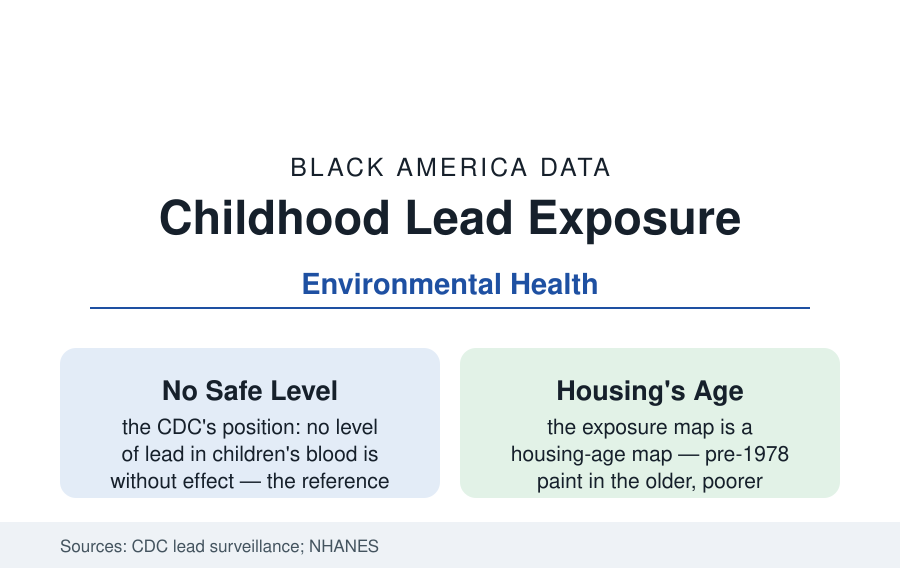

Black Public Health
Lead Exposure and Black Children: The Environmental File
Black children have carried the nation's highest blood lead levels for fifty years of measurement. The CDC surveillance data and the housing file behind them.

For as long as the federal government has measured it, Black children have carried the highest blood lead levels in America. The NHANES examination series documents both halves of the story: the triumph — children's blood lead levels collapsed by more than 90 percent from the late 1970s, when the average child of any background carried levels now considered poisoning, to today — and the remainder, in which Black children, and poor children in old housing, retain the highest levels in every edition. This article reports the lead file.
The Measurement Series and the Current Levels
The CDC's reference value — the level marking the highest-exposed 2.5 percent of children, lowered to 3.5 micrograms per deciliter in the current standard — frames the current counts: by that measure, several hundred thousand American children aged one to five exceed the reference in the surveillance estimates, with Black children overrepresented at roughly twice their population share in the state surveillance data. The distribution's tail drives the disparity: at the higher bands (ten micrograms and above, the levels with the documented IQ and behavioral effects at their steepest), the racial skew sharpens. The NHANES trend lines show the gap narrowing in absolute terms as all levels fell — the unleaded-gasoline and paint-ban generations' gift — while the ratio persists, because the residual exposure is concentrated in the housing stock the abatement programs reach last. Flint's water crisis (2014–15) made the file famous as a municipal failure; the surveillance data's quieter point is that Flint's distribution, at its worst, resembled the ordinary old-housing exposure of dozens of legacy cities' Black districts.
The Housing Mechanism
The exposure pathway is painted on the built environment: lead paint in pre-1978 housing (banned for residential use that year, universal before 1950), deteriorating in the rental stock of the city profiles' older districts, ingested by toddlers through dust and soil in the developmental window of maximum vulnerability and maximum hand-to-mouth behavior. The American Housing Survey maps the stock: millions of units with lead hazards, concentrated in the Northeast and Midwest legacy cities and the rural Black Belt's old housing, occupied disproportionately by the renters of the housing profiles — families with the least control over the hazard's remediation and the least legal leverage in states where lead-safe rental laws are weak or unenforced. Water (lead service lines, the infrastructure program's replacement file — ten million lines in the EPA's inventory, their replacement funded at scale only in the recent infrastructure law) and soil (the smelter and traffic legacy in specific districts) complete the pathway map. The abatement economics are the file's scandal in numbers: lead hazard control returns multiples of its cost in the cost-benefit literature (avoided special education, earnings loss, and health costs), and the programs' funding has never matched their own arithmetic.
The Effects Ledger
The outcome literature is among the most consistent in environmental health: childhood lead exposure at the levels the surveillance records is associated with IQ decrements (the pooled analyses find the steepest losses at the lowest levels — no threshold), attention and behavioral effects feeding the education section's discipline and identification data (the lead-to-special-education link appears in the state longitudinal studies), and adult cardiovascular and renal outcomes in the follow-up cohorts. The research frontier includes the lead-crime hypothesis (ecological correlations between childhood exposure and later community violence rates — reported here as a contested ecological literature, not an individual-level finding) and the intergenerational file: the children of the high-exposure 1970s cohorts are the parents of today's screened toddlers, their own bone-lead stores mobilizing in pregnancy in the physiology literature.
Screening and the Response System
The response system runs on Medicaid's mandate: children on Medicaid must be screened at one and two years (the federal requirement), and the claims data show the mandate substantially unmet — screening rates in many states run well below the requirement, with the highest-risk children in the oldest housing the least reliably reached. State variation is the map's texture: the strong-program states (mandatory screening, rental inspection laws, abatement enforcement in the Northeast's older programs) post the best distributions; the screening data's bright spot is the trend itself — every NHANES generation lower than the last, the current fight over a remainder measured in fractions of the historical exposure and concentrated in the places this reference keeps meeting.
Reading the Lead Data
Lead is the environmental file's proof of concept: a poison whose removal from gasoline and paint produced the fastest population-health gain in the modern record — and whose residue sits, with cartographic precision, in Black children's blood, in Black neighborhoods' houses, at levels the science calls unsafe at any dose. The exposure map and the redlining map are the same map at different scales; the surveillance data have been saying so, in micrograms, for fifty years.
More in Black Public Health
Hypertension Among Black Adults: Prevalence, Control, and Consequences
About 55 percent of Black adults have hypertension — the highest rate of any U.S. group. Prevalence, onset, control, and the stroke, heart, and kidney consequences in the data.
Diabetes Among Black Adults: Prevalence and Complications
Nearly one in five Black adults has diabetes, diagnosed or undiagnosed — and its complications fall with particular weight. The CDC data on prevalence, control, and outcomes.
Black Life Expectancy: The Gap at Birth and Its Causes
Black life expectancy at birth is about 73 years, roughly five years below the national figure — the summary measure of every health gap in this section. The CDC data.
Source: Centers for Disease Control and Prevention, National Health and Nutrition Examination Survey and childhood lead surveillance; EPA and HUD lead program data; American Housing Survey.